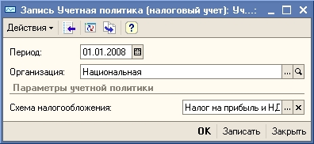

ПРИМЕЧАНИЕ
В поле Период указывается дата, начиная с которой применяется данная учетная политика. Если учетная политика организации изменится, необходимо ввести новую запись в регистр сведений Учетная политика (налоговый учет) и установить в поле Период дату, с которой действует новый порядок налогового учета.
2. Нажмите кнопку ОК для сохранения сведений об учетной политике налогового учета и закрытия формы Учетная политика (налоговый учет).
Важно.
Учетная политика налогового учета настраивается отдельно для каждой организации, входящей в состав торгового предприятия. В списке Учетная политика(налоговый учет) должны быть заполнены отдельные записи для каждой организации, входящей в состав торгового предприятия.
Следующий раздел: «Заполнение сведений о деловых партнерах торгового предприятия»